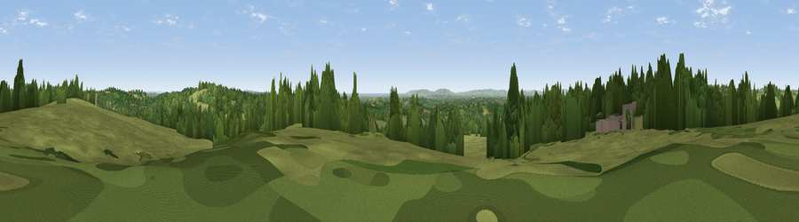

Viewpoint near Cade Street
#16050 in England · top 21% of its area beats it · near Cade StreetWhere it is
The exact computed spot (TQ 61375 20875). Click the marker for map links.
The view, rendered

A 360° render of this exact spot computed from the terrain model, tree cover and land cover — summer colours, afternoon light, calibrated against photographs of famous viewpoints. Real trees, hedges and buildings will differ in detail.
The panorama
Grey silhouette: terrain skyline in each direction (720 bearings, Earth curvature and refraction included). Dashed green: skyline with trees (+15 m) and buildings (+8 m) as obstacles. Blue strip: how far the ground is visible on each bearing.
Where the view opens
Wedge length = distance to the farthest visible ground on that bearing (vegetation-aware). Rings at 10, 25 and 50 km.
What fills the view
63% grassland · 32% woodland · 2% built-up · 2% cropland ·
Angular shares of the visible panorama (visual magnitude), not map area. Landscape diversity 0.37 (0–1 Shannon).
Key numbers
More beautiful places nearby
The staircase of upgrades: each row has a higher view potential than everything closer. Driving times are estimates from straight-line distance, calibrated against real road routing — check an actual route before setting out.
| Place | Direction | Drive | Score |
|---|---|---|---|
| Viewpoint near Rushlake Green | SE · 3 km | ~7 min | 57.4 |
| Brightling Obelisk [Brightling Down] | E · 6 km | ~12 min | 69.1 |
| Viewpoint near Wilmington | SSW · 18 km | ~32 min | 81.8 |
| Wilmington Hill | SSW · 19 km | ~32 min | 85.4 |
| Viewpoint near Alciston | SW · 20 km | ~33 min | 86.8 |
| Firle Beacon | SW · 20 km | ~33 min | 88.9 |
| Viewpoint near Niton | WSW · 120 km | ~145 min | 89.2 |
| Viewpoint near West Bexington | W · 209 km | ~226 min | 89.5 |
50.96470, 0.29673 · source: screening · position refined by local search. Computed location — check access rights before visiting.